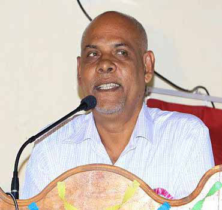
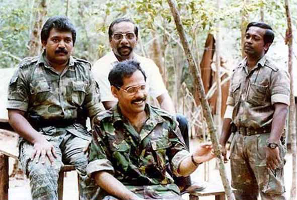
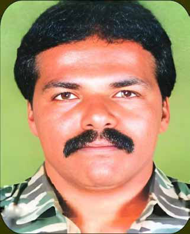
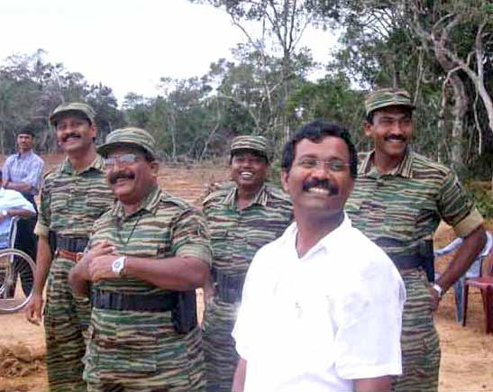
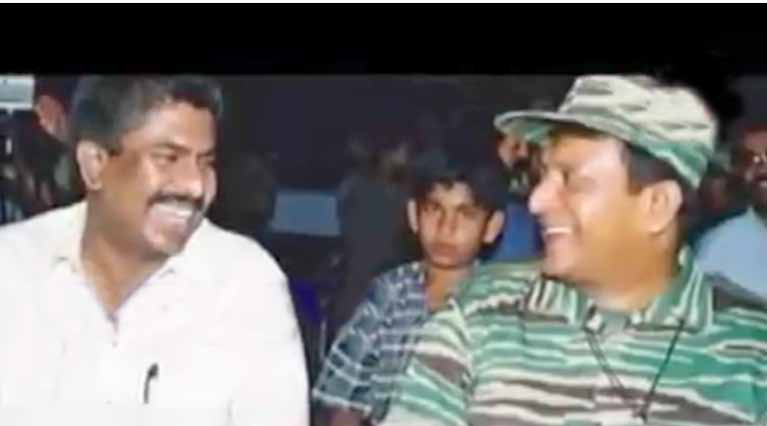

The Battle for Money: How Achchuthan Orchestrated KP's Fall from Grace
The Battle for Money: How Achchuthan Orchestrated KP's Fall from Grace
Jaffna Monitor hellojaffnamonitor@gmail.com 34 Sources close to both Achchuthan and Kumaran Pathmanathan (alias KP), the then-LTTE Head of International Relations, revealed to Jaffna Monitor that Achchuthan was instrumental in orchestrating KP's removal from his position in 2001. After KP's ousting, Castro was appointed to take over the role. A credible source revealed to Jaffna Monitor that the late LTTE intelligence leader Vinayagam, who recently passed away in France, had confided that Achchuthan made repeated, unreasonable, and often malicious allegations against KP. Vinayagam reportedly told this source that he had personally witnessed these accusations. According to Vinayagam, Achchuthan and his team harbored an ultimate plan to remove KP from his position as the LTTE's international head. Their motive, Vinayagam suggested, was to gain control over LTTE funds and siphon them off with Castro's (V.Mannivannan) assistance. Though Castro was a dedicated fighter, he reportedly harbored a personal dislike for KP for reasons known only to him. Credible sources revealed to Jaffna Monitor that Achchuthan even met with Pottu Amman, the LTTE's intelligence chief, to present allegedly fabricated documents aimed at implicating KP. Achchuthan reportedly disseminated these allegations to key individuals close to Prabhakaran, The Battle for Money: How Achchuthan Orchestrated KP's Fall from Grace Achchuthan Kumaran Pathmanathan (alias KP)


Jaffna Monitor hellojaffnamonitor@gmail.com 35 including a trusted confidant of the LTTE supremo living abroad. These accusations portrayed KP as a rogue operator who acted independently, misappropriated funds, and—most damagingly— overcharged for arms procurement. This narrative gained significant traction, ultimately influencing Prabhakaran, who was known for his unwavering stance on financial integrity. "Prabhakaran could tolerate many things, but dishonesty with money was not one of them," a source remarked. According to insiders, Achchuthan convinced the LTTE leadership that arms procurement could be handled at a significantly lower cost than what KP was allegedly managing. While it remains uncertain whether Prabhakaran fully believed these claims, the campaign was persuasive enough to lead to KP's removal from his role as the LTTE's Head of International Relations in 2001. Vinayagam From left to right - LTTE supremo Prabhakaran, Kumaran Pathmanathan (alias KP), behind them LTTE's theologian Anton Balasingham, and standing is Col. Shankar."


Jaffna Monitor hellojaffnamonitor@gmail.com 36 However, the new team under Castro, which took over the LTTE's international operations and arms procurement, faced significant setbacks. They were unable to secure even a single arms shipment, leaving the organization's resources severely strained. By late 2008, a frustrated Prabhakaran reappointed KP. Another source, once close to Achchuthan and his brothers, told Jaffna Monitor that Achchuthan and his brother often claimed to close friends that, following KP's removal in 2001, it was they who kept him under house arrest in Malaysia, allegedly confining him to a serviced apartment. Achchuthan and his circle frequently boasted about having control over KP during this time. However, sources close to KP strongly refute this narrative, emphasizing that KP—a man renowned for his resourcefulness and audacity—was far from being an appa koppai (a colloquial term for someone extremely naive or gullible) who could be subdued by Achchuthan and his family. The claim, they argue, is yet another exaggerated tale in Achchuthan's arsenal to inflate his role in LTTE history. From left to right - LTTE Intelligence Wing Head Pottu Amman, LTTE Supremo Prabhakaran, Brigadier Theepan, LTTE Political Wing Head Thamilselvan, and Jeyam on LTTE's runway in Kilinochchi in the early 2000s, watching LTTE's light aircraft being flown.

Jaffna Monitor hellojaffnamonitor@gmail.com 37 A credible source recounted a particularly intriguing story to Jaffna Monitor. When the shocking news of LTTE leader Prabhakaran's death reached them, KP, Achchuthan, and a few other international operatives were in Indonesia, operating under assumed identities. Recognizing the gravity of the situation, KP decided to officially announce Prabhakaran's death to the Tamil community the following day. They went to bed that night, prepared to confront the somber task in the morning. However, when dawn broke, Achchuthan vanished without a trace. Along with him, a substantial sum of cash had also disappeared, according to a source close to the incident. Within three months of the LTTE's defeat and the death of its leader, Prabhakaran, KP was apprehended in Malaysia on August 5, 2009, by Sri Lankan intelligence. The high-profile arrest sent shockwaves through LTTE circles abroad, instilling fear among the remnants still in hiding. Credible sources reveal that Achchuthan, who was also in Malaysia at the time of KP's arrest, wasted no time in fleeing. Abandoning everything, he boarded the next available flight to Switzerland and eventually sought refuge in France. As a French citizen, Achchuthan likely recognized that France offered him a greater sense of security and protection than any other country. A source close to Achchuthan and his family disclosed that the brothers nurtured a deep- seated grudge against KP, holding him responsible for their inclusion on the Interpol watch list in 2010. The source explained that KP was the only individual with detailed knowledge of their operations in Malaysia and other countries, making him uniquely positioned to expose their activities. The family believes that, after KP's arrest, he deliberately leaked this information, resulting in their names being added to Interpol's list and fueling their resentment toward him. Castro, Right - Prabhakaran.
